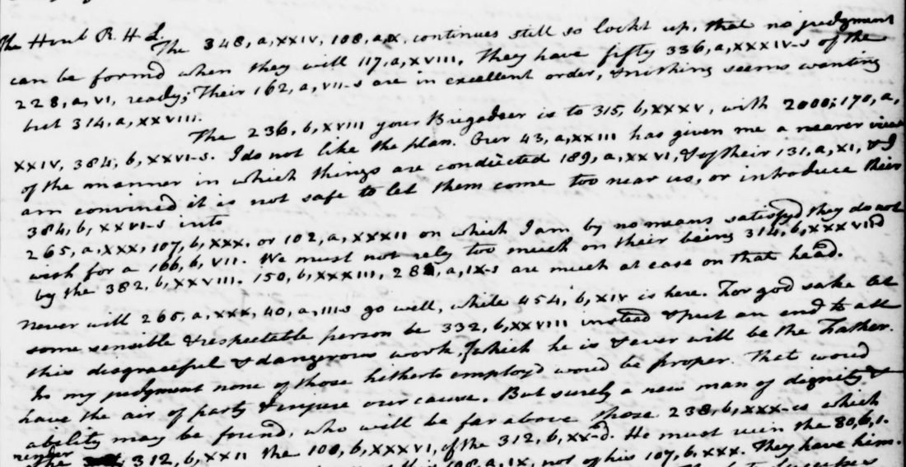

At a glanceRead after matching with an external key · partial (148 of 166 groups firm, 14 doubtful, 4 unread)
- The letters
- Six letters from Arthur Lee in Paris to his brother Richard Henry Lee, a Virginia delegate in Congress until late May 1779: 29 March, 22 April, 27 April, 21 May and 27 September 1779, and 29 February 1780, as copied in Lee’s letter book.
- Where
- National Archives, Papers of the Continental Congress, microfilm M247, item 102 vol. 3, catalog 502968528 (catalogued as “Transcripts”), images 0019, 0027, 0035, 0041–0042, 0122–0123 and 0183.
- The cipher
- A book code: page, column and entry of John Entick’s New Spelling Dictionary, with endings written after a dash; persons from the dictionary’s list of Christian names.
- How it was deciphered
- The system was known; the London 1776 setting of the dictionary was matched to Lee’s groups. A second agent, not shown the reading, re-derived 54 groups blind: 43 the same word, 29 of 30 on a sample chosen by rule. Scored afterwards against the old decipherment on the received copies of three letters: 63 of 72 comparable groups the same. Every figure of the 166 groups was then read again by two blind readers.
- What it says
- Lee’s private charges against Gérard, Deane and “the old Doctor”, his distrust of French aims and troops, and Virginia family politics: “Never will our affairs go well, while Benjamin is here.”
- Still open
- Four groups unread, fourteen doubtful (two with the page number cut off at the scan’s edge). Three held-out tests on letters Lee wrote in the same code and that were glossed at the time fell short of their 80% mark (54 and 55 of 71; 10 of 19), mostly through misread figures. No received copy of the letters of 29 March, 27 September 1779 or 29 February 1780 was found on the Lee Family Papers microfilm, in its index, the American Philosophical Society calendar or Harvard’s calendar, or in the online catalogues of the Virginia Historical Society, the Library of Congress and Harvard. No person has checked the reading on the images.
- Credit
- Unidentified hands interlined a decipherment, partly conjectural, on the received copies of the letters of 22 April, 27 April and 21 May 1779. Edmund C. Burnett (1917, 1926–28) and Satoshi Tomokiyo (Cryptiana) identified the code and its dictionary; Burnett deciphered the other direction, Richard Henry Lee’s letters to Arthur, and his typed partial key gives values for a third of the groups here. Find, transcription and reading from the letter book contributed by Andrew Beling, with AI agents.
01 The letter book
The volume the National Archives catalogue calls “Transcripts of Letters from Arthur Lee, William Lee, Ralph Izard, and the Joint Commissioners … Volume 3” is Arthur Lee’s book of copies of the letters he sent from Paris between March 1779 and May 1780: to Vergennes, Franklin, the Committee for Foreign Affairs, his brothers and others. It was found by paging all 227 images at reading size. Six letters to “R. H. Lee” carry bare groups of numbers in the middle of the clear text, with no decipherment anywhere in the volume: 166 groups in all (44, 16, 23, 56, 24 and 3). The fourth letter breaks off with “continued p. 39”; page 39 finishes the sentence and has no more code. It has no date line in the letter book, where it stands before letters of 9 May; the copy Richard Henry Lee received is dated 21 May 1779 and runs on for three more pages, so Lee extended the letter before sending it.

02 What Lee wrote
These passages are Arthur Lee’s private charges, written to his brother. They are given in his words, not as established facts. Words from firm groups are in plain type; a doubtful group is printed in brackets with a question mark, with both candidates where two are open; […] is an unread group. The code gives persons only by Christian name: who is meant is never in the code, and identifications below are inference.
29 March 1779. “The Chevalier de la Luzerne is named to the place of Gerard … I am afraid the [former?] will have done all the mischief, & I foresee much, before his departure. The [vendible? venerable?] friend, is doing all he can here with his assistants to promote Deane’s [charges?]. They are joined in the same cause & equally wicked.” And: “I wou’d hint to you, that Frenchified [French?] faith, & friendship, are the same & nothing material to be hazarded on either. Interest, is the sole guide … The nation, begins already to talk of against the alliance.”
22 April 1779. “I have it from very good authority that Gerard, is suspected here of hav[in]g been concernd with Deane & others, in merchandise, Contracts &c … My opinion is that the Doctor, the French consul, with you, Gerard, Deane, Chaumont [&] Beaumarchais are all interested, together.” The French court “is in a much distress about supportg the war” and means to call for “vigorous [exertions?]”.
27 April 1779. “Since Gerard was recalled the conversation runs freely about his connexion in jobs with Deane, Beaumarchais & others”; certain persons may “proceed from jobbing the state secrets, to job the state”; and “a certain person here” is “a mere instrument in the hands of those whom the court, set over him”.
21 May 1779 (entered in the letter book before 9 May). “The Marquis your Brigadeer is to return, with 2000 French [troops?]. I do not like the plan … I am by no means satisfyd they do not wish for a footing. We must not rely too much on their being restrained by the treaty. European politicians are much at ease on that head. Never will our affairs go well, while Benjamin is here. For god sake let some sensible & respectable person be sent instead … In one word he is the servant of this court, not of his country. They have him.” A new man must be “far above those meannesses which render the representatives the [contempt?] of the represented”. Whom “he” means is not fixed by the code: the sentence before is about the new man to be sent, though “They have him” points to Franklin. Presenting Lee’s piece against “the old Doctor” “will entirely depend upon the part taken by John Adams”, and “The successor of Gerard has often declard his opinion here of the old Doctor’s unfitness to be minister, here.”
27 September 1779. After “the wicked manoeuvre of M. Gerard”, Lee warns of a man whose name group is unread: “His design is you may depend to be alternately governor & delegate”, and “Till you make it a point, as they do, to get places of […], as well as influence the struggle will be in vain.” He sets out family plans, and ends: “This winter will I think decide on peace, or a long [war?] by the interference of other powers among wch Russia is most to be feard.”
29 February 1780. “Do you think it practicable to get myself, appoint[ed] from yr state, to Congress.”
The full readings of all six letters, with every group, are under Full texts below.
03 The Deane–Lee affair
Arthur Lee and Silas Deane were fellow commissioners of the United States in France, with Benjamin Franklin; the treaties of alliance and commerce with France were signed on 6 February 1778 (Burnett, Letters of Members, III, p. xvi). Congress recalled Deane in December 1777, chiefly over his contracts with French officers. Charges of a different kind, that he had traded privately and misapplied public funds, and whether Beaumarchais’s supplies were a debt or a French gift, originated with Lee and were pressed in Congress by his brothers and friends. On 5 December 1778 Deane published in the Pennsylvania Packet an address “to the free and virtuous citizens of America” with counter-charges against the Lees, and Congress split into two hostile factions (Burnett III, pp. xxxii–xxxiii). On 14 September 1778 Congress had made Franklin minister plenipotentiary at the French court (Burnett III, p. 462 and n. 3), which left Lee his commission to Spain. From 6 April 1779 Congress debated recalling its commissioners; a motion to recall Arthur Lee failed on a tie vote on 3 May, and the French minister Conrad-Alexandre Gérard was drawn into the dispute (Smith, Letters of Delegates, 12:301–302 n.). Richard Henry Lee held that Gérard sided with Deane (letters of 23 May and 14 August 1779: Smith 12:513; Ballagh II, p. 124), a view Jared Sparks later doubted (Ballagh II, p. 124 n.). Lee lost his place when John Jay was appointed minister to Spain in September 1779 (Smith 12:302 n.; Burnett IV, p. 481); he left France from Lorient in 1780 and was in Philadelphia by October (Lee Family Papers microfilm, roll 6, editorial note; Ballagh II, pp. 196, 206).
The letters show why such passages were hidden. Lee was charging the ally’s minister, the ally’s court and a fellow envoy with self-interest and worse while Congress was debating his recall. The clear text keeps the frame (“I have it from very good authority that”, “My opinion is that the”) and the code carries the names and the hard words. It was not strong protection. Richard Henry Lee had written to Arthur on 16 September 1778 not to use “the book cypher” unless the bearer delivered the letter himself: “It may be good against his curiosity, but not against that of many others who by Carmichaels treachery have got possession of the key” (Ballagh I, p. 436). On 17 September 1779 James Lovell wrote to Arthur that something in his letters to the committee “was in Cyphers. Merryweather Smith decyphered it readily” (Burnett IV, pp. 424–425). Arthur answered a report from his brother from L’Orient on 3 April 1780: “I observe that you say that the Enemy is in possession of our Cypher. Much good may it do them. We can correspond with the other when necessary.” (Lee Family Papers microfilm, roll 6, Internet Archive image n928.)
04 The code and the dictionary
Each code word is written as page, column, line: “243, a, XVII” is page 243, left column, 17th entry: minister. Endings follow a dash (115,b,XXXVIII-s = Deane’s; 322,a,VII-sia = Rus-sia). Persons come from the list “The most usual Christian Names of Men” on pages 454–455, which has five columns lettered a to e: Gerard, Benjamin, John and Adam-s, Samuel, Francis, Arthur. Entries are counted from the top of the column without the running head, letter headings or the indented run-over lines of long entries.
Burnett named the dictionary in 1917, “probably” the 1777 edition, and Tomokiyo gives Jay’s 1777 usage; no 1777 copy was found online. Of the editions on the Internet Archive, 1772 and 1781 are paged differently. The 1773 and 1776 printings share page breaks in places but differ elsewhere: on page 108, Court is the 10th entry of column a in 1773 and the 9th in 1776, and Lee writes court as 108,a,IX four times. The London 1776 printing (Edward and Charles Dilly), as scanned from microfilm on the Internet Archive, is the copy used. No difference between it and a 1777 printing has been shown.
05 How the reading was checked
A blind rerun. A second AI agent, given the transcription and the dictionary but not the reading, chose its sample by a rule written down first (the 24 groups the transcription marks doubtful, and every fifth group, 30 more), decided the edition and the counting rule from Tomokiyo’s groups alone, and froze its own table before opening the reader’s files. It found the same word for 43 of the 54 groups, and for 29 of the 30 chosen by rule; the other eleven are all doubtful groups or one emended by the reader. It also read every disagreement again on both the letter-book and the dictionary images, and its wording is used throughout this page.
A held-out test on Lee’s glossed letters. An independent test on 71 groups glossed at the time in Lee’s letters of 27 and 31 August 1778 and 21 May 1779 to the Committee for Foreign Affairs (Papers of the Continental Congress, item 83), none of them used to build this reading. The plan and its pass mark (80% the glossed word or its form) were written first, and a second agent looked the groups up blind by the frozen rule. Result: 54 of 71 (76%), below the mark, so the test as planned failed; shifting the page by one either way, taking the other column or using the 1781 printing gives 0 of 71. Looked at again after scoring, three misses are our own misreadings of the clerk’s figure 4 (at the corrected places the rule gives Sorry, Affair and Minister, as glossed), four are dictionary pages we have no clear image of, four look like Lee’s own slips, one is the decipherer’s wording (“redeeming” for the rule’s sinking), and four were then unexplained (among them “Florida”).
A second look, and a second test. On 1600-pixel images most of those misses are misread figures: the clerk’s 165 (read as 163) gives Florid + a, “Florida”; 253 (read as 233) gives Negotiation; the three groups under “Treaty of Alliance” are Treaty, Of (259, read as 359) and Alliance (43,a,XXIII, read as 63,a,XXVI). Where the decipherer wrote “a noble motion”, the rule gives No: “She [Spain] has made no motion to conclude what is stipulated in the Treaty of Alliance”. Two misses are Lee one entry off, one is unexplained (Quarryman where “quarrel” is glossed). These are explanations found after the score. A second test was then planned and run once: a helper who never saw the glosses read the figures from strips cut to hide them, and another looked them up blind. It scored 55 of 71 (77.5%), again below the 80% mark, with the controls at 0 or 1 of 71; nine of its sixteen misses are again misread figures. Where the figures are transcribed correctly, the rule gives the glossed word, or a word that fits the sentence, in all but three or four of the 71 groups (by our count after looking); reading the clerks’ figures is the weak step, and neither test passed the mark set before it.
Every figure read twice more. Because the tests kept failing on the figures, every figure of the 166 groups was transcribed again by two AI readers who had seen neither our transcription nor each other’s, from strips of the letter-book images; the rule, fixed first, was that a group is firm only if two independent readings agree on page, column and line and the word fits. They agreed with each other on 162 groups. Our transcription was wrong in one group (the column of 455,d,XXVII, Samuel) and right only in its second choice in one more: about one figure error in 166. Four groups that rested on one reading or on the other copy were made doubtful: charges, exertions, contempt, and Gerard or Thomas. A misreading shared by every reader would not be caught: five of six readers misread the same seed figure, 81 as 84.
A third test, Lee to Henry Laurens. Lee’s letter to Henry Laurens of 7 December 1778 (University of South Carolina, South Caroliniana Library; the repository’s lead 1435) has the word written above each of its 19 groups. The plan was written first and said it was the third attempt; strips hiding the glosses were cut by a separate agent, two blind readers transcribed the figures, their differences were settled on the strips, and the look-up was frozen before anyone looked at the glosses. It scored 10 of 19, far below the mark, with the controls at 0. Looked at afterwards, seven of the nine misses are misread figures in that letter’s hand (a 1 read as 5 three times, giving pages the dictionary does not have), and six of those give the glossed word at the figures the glosses imply. Three tests, three misses: the rule holds wherever the figures are transcribed right, and transcribing the figures is the weak step.
Lee’s own instructions of 3 June 1776 (Papers of the Continental Congress, item 83 vol. 1) describe a different method in an unnamed book: the page, then a letter of the alphabet (doubled or trebled past 26) for the word’s place on the whole page, with no column. None of the 1778–80 groups follows it.
The reader’s own test, written and hashed before decoding, compared the real look-ups on 30 random groups with shifted pages and a wrong edition: 27 of 30 fit the clear text, against 0 or 1 in each control. It passed its mark, but it is weak: the same agent extracted and judged the words, the judging sheet showed decoded neighbours, and random dictionary words almost never fit, so the test could not fail by much and says nothing about the doubtful groups. The repository’s letter-model validation is underdetermined, as expected for a code of whole words with about 1.4 occurrences per group.
06 Who read it before
The received copies. After this reading was made, the letters of 22 April, 27 April and 21 May 1779 as Richard Henry Lee received them were found in the Lee Family Papers of the University of Virginia, on roll 6 of the 1966 microfilm edition (ed. Paul P. Hoffman and John L. Molyneaux), which the Internet Archive shows. Each has a decipherment written above the code groups, in two layers: darker skeleton letters (“s-t-e” for state) or initials, and fainter whole words, often queried in an editor’s manner (“base (?)”, “Izard?”, “R. Morris”). A note at the head of the May letter says “The decyphering in this is for the most part conjectural”; it stands beside the item number “No 299”, and the 1966 guide says most such numbers are in the hand of the younger Richard Henry Lee, the grandson who wrote the Life of Arthur Lee (1829). Who wrote the interlinings, and when, is not settled here. No printing of them was found.
Before the received copies were opened, the key and reading were frozen and the scoring rule written down. Of the 95 groups in the three letters, 45 have the same word above them, 18 the same word in another form or as a skeleton that fits only our word, 9 a different word, and 23 nothing, or a single letter, or nothing legible: 63 of the 72 comparable groups agree. The nine differences are not dictionary words at those places: “sail” over the entry Return, “ruled” over Restrain, “service” over Secretary, “Izard?” over I, names guessed for Christian names (“Franklin” twice for Benjamin, “R. Morris” for Samuel), one mark too doubtful to read, and “Court (King?)” over 243,a,XVII in the April letter. Page 243 of the 1776 printing gives Minister as the 17th entry of column a, and Lee writes court as 108,a,IX, which the same interliner deciphers correctly two sentences later; in the May letter the interliner writes “minister” over 243,a,XVII twice. “Court (King?)” is a guess from the sentence (“he imposed upon the … here so as to obtain the Letters for him”).
The received copies also write in full some digits the letter book loses at its edge or under a blot. They settle three groups: distress (132) in April, politicians (284) and the second Benjamin (column b) in May. Two more rest on the received copy alone and stay doubtful after the double reading below: exertions (152; in the letter book the page is under a blot) and an unread group the received copy writes 101,b,XXXVI, Contempt, where the letter book reads 100,b,XXXVI on every reading. In one more place the copies differ: the letter book has 82,b,XXI, Chaplain, the received copy 82,b,XXXI, Character (“his … is exceedingly reprobated”); that group stays open.
No received copy of the letters of 29 March, 27 September 1779 or 29 February 1780 was found on the Lee Family Papers microfilm (roll 6 paged image by image, rolls 5, 7 and 8 in part) or in its index, the American Philosophical Society calendar or Harvard’s calendar (Winsor, 1882), all three filmed on roll 1, nor in the online catalogues of the Virginia Historical Society (Lee Family Papers, Mss1 L51 f and Mss1 L51 b, no item list online), the Library of Congress or Harvard. A cipher list Arthur Lee sent Samuel Adams with a letter of 27 April 1779 (New York Public Library, Samuel Adams papers) is a short numbered list of names and words, not this code.
A further letter, 21 August 1779. The same roll has the received copy of a letter from Paris of 21 August 1779 (images n474–n476), listed in Harvard’s calendar, with three groups and nothing above them: “I take it to be a vindictive persecution of him [Mr Ford] by the 179,b,XVIII, & 454,b,II, 77,b,XXXIII-y with whom he has told me, he was at variance & whom I believe to be bad men.” In the 1776 setting these are Governor (Burnett’s key agrees), Archibald and Car-y: “the Governor & Archibald Cary”. The last numeral runs into the ending and is doubtful. In the letter book (image 0095, dated 20 August) the same place is struck through and could not be read. This letter is not part of the 166 groups above.
Richard Henry Lee’s side. A coded letter on the same roll (images n227–n229), from Richard Henry Lee to Arthur, 22 or 23 May 1779, is already printed decoded: Burnett IV, no. 295, pp. 227–229, and Smith 12:513–515. Fourteen of fifteen of its groups checked against the 1776 setting give the word printed there.
Burnett’s key. Roll 1 of the same microfilm reproduces a typed partial key by Edmund C. Burnett, “Cipher used by Richard Henry Lee”, worked out from the 1782 edition “by a process of approximation and calculation”. It gives a value for 39 of the 119 distinct groups in these letters, the same word for 33 of them; it gives 243,a,XVII as “ministry”. It is a key, not a reading of these letters.
In print. Edmund C. Burnett’s Letters of Members of the Continental Congress prints only letters of members; it deciphers the other direction, Richard Henry Lee’s coded letters to Arthur, noting that the Lees’ cipher passages “appear to have remained for the most part undeciphered by others than the recipients” and that “No copy of the edition actually used by the Lees has been found” (III, p. 231 n. 2). In 1917 he named the book as “probably Entick’s New Spelling Dictionary, edition of 1777” and worked from “the edition of 1782 (the nearest to 1777 obtainable)” by “a process of approximation” (American Historical Review 22, p. 330). Satoshi Tomokiyo’s Cryptiana page on book codes identifies the system and about a dozen groups and lists these letters among the Lee-family letters in the code, without decoding them. Ralph Weber’s United States Diplomatic Codes and Ciphers (1979) discusses the Lees’ use of Entick (index; the page itself was not seen). None of the six letters was found in Burnett, Ballagh’s Letters of Richard Henry Lee, Smith’s Letters of Delegates to Congress, the 1829 Life of Arthur Lee, Wharton or Sparks; Louis W. Potts’s Arthur Lee (1981) was searched inside only. Hays’s 1899 calendar of the Lee correspondence at the American Philosophical Society lists no letter of Arthur to Richard Henry Lee after 1774. So this is an independent reading of all six letters from the letter book, with the 1776 setting established; for three of them an older interlined decipherment exists, and for the other three we found none.
07 How sure the reading is
- The key rests on the dictionary identified by Burnett and Tomokiyo, the London 1776 setting matched here, a blind rerun (43 of 54 the same word), controls that score 0 or 1 of 71, the old interlined decipherment (63 of 72) and Richard Henry Lee’s printed letter of May 1779 (14 of 15).
- The weak step is reading the numerals. Three tests on glossed letters missed their mark, mostly on misread figures; on the letter book itself, two further readings found our figures wrong in 1 group of 166.
- Firm 148: in 146 of them two independent readings of the figures agree and the word fits; 2 (distress, politicians) rest on one full reading, the received copy. Doubtful 14, unread 4.
- All image readings were made by AI agents. No person has checked them.
08 What remains uncertain
- Unread: 331,b,VI-d (“almost […]d the French”; the same in the received copy, with nothing above it), 250,?,XII (heavily corrected), 455,a,XV (“I suspect […] exceedingly”; the entry is German) and 293,b,XIII (“places of […]”).
- Two page numbers in the 29 March letter are cut off at the left edge of the scan, and their words (Bishop, former) are supplied from sense, not read.
- Doubtful as written: vendible or venerable; Frenchified or French; considerableness; chaplain or character; troops, twice (both copies write 384,b,XXVI, the entry Trot); you; war. Doubtful after the double reading: charges (82 or 12 at the gutter), exertions and contempt (on the received copy only), Gerard or Thomas (under a blot).
- Not carried by the code: that “the former” is Gérard, that the consul is Holker, that “the servant of this court” is Franklin.
- Not checked: Potts’s text and Weber’s page on the Lees; whose hands interlined the received copies (ink and pencil cannot be told apart on the film); the item lists of the Virginia Historical Society’s Lee Family Papers; Harvard (Houghton Library, Arthur Lee Papers) except through its 1882 calendar. The transcription is one AI agent’s; two further AI readers read every figure again, and the check reread 54 groups on the images. No person has checked the reading.
09 Sources
- National Archives, Papers of the Continental Congress, microfilm M247, item 102 vol. 3 (Arthur Lee’s letter book, March 1779 – May 1780), catalog record 502968528, images 0019, 0027, 0035, 0041–0042, 0052, 0122–0123, 0183.
- John Entick, The New Spelling Dictionary (London: E. and C. Dilly, 1776), Internet Archive (scan of a microfilm; the holding library is not named in the record). Other editions compared: 1766, 1772, 1773, 1781.
- University of South Carolina, South Caroliniana Library, digital collection “American Revolution”, Letter, 1778 December 7, Paris, France, Arthur Lee to Henry Laurens (two pages; the third test).
- Satoshi Tomokiyo, Cryptiana, “Book Codes”.
- Edmund C. Burnett, “Ciphers of the Revolutionary Period”, American Historical Review 22 (1917), pp. 329–334; Letters of Members of the Continental Congress, vols. III (1926) and IV (1928).
- Ralph E. Weber, United States Diplomatic Codes and Ciphers, 1775–1938 (Chicago, 1979).
- The Lee Family Papers, 1742–1795, ed. Paul P. Hoffman and John L. Molyneaux (Charlottesville: University of Virginia Library, 1966), microfilm: roll 6, Internet Archive, images n73–n75 (22 April 1779), n109–n111 (27 April), n203–n211 (21 May), n474–n476 (21 August), n928 (3 April 1780); roll 1, Internet Archive, the printed guide and Burnett’s typed key “Cipher used by Richard Henry Lee” (images n188–n203).
- Paul H. Smith et al., eds., Letters of Delegates to Congress, 1774–1789, vols. 9 and 12 (Washington: Library of Congress, 1982, 1985).
- Arthur Lee to Samuel Adams, 27 April 1779, with “Cyphers A.L. to S.A.”, Samuel Adams papers, New York Public Library, digital collections.
- Louis W. Potts, Arthur Lee: A Virtuous Revolutionary (Baton Rouge: Louisiana State University Press, 1981).
- James Curtis Ballagh, ed., The Letters of Richard Henry Lee, 2 vols. (New York, 1911–1914).
- “Calendar of the Correspondence of Richard Henry Lee and Arthur Lee in the Library of the American Philosophical Society”, Proceedings of the American Philosophical Society 38 (1899), pp. 114–131, Internet Archive.
The transcription, every group with its look-up and grade, the readings, the frozen test, the blind check and the comparison with the received copies are in targets/lee1779/.